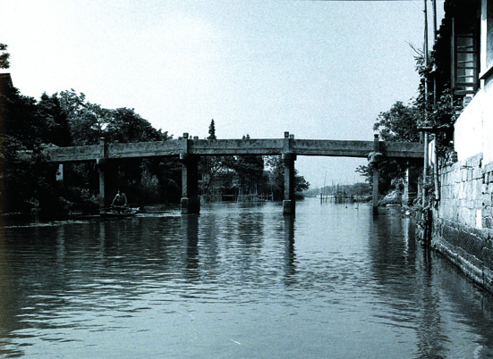

嘉兴市文物保护网 · 市级文物保护单位 · 2014-06-16 · 原文

南星桥位于嘉兴市南湖区凤桥镇新篁社区新篁小学东侧，原名新桥，为砖桥，明末已有。据明崇祯《嘉兴县志》卷三《桥梁》载：明末已有。至清乾隆年间，桥已坍。嘉庆五年（1800），张镇（字起也）等七名里人同募重建，改建成石桥。东西横跨丁谿，系七孔梁式石板桥，全长34.7米，宽2.76米，净跨20.4米，距水面高3.8米。桥面南北两侧石护栏齐全，有望柱6对，天磐石8个。南北桥首有“南星桥”额（张廷济题），又题有南石栏额：“寿纪光华”，北石栏额：“文昌朗照”。桥中孔东侧桥柱（由五块条形石并列而成）靠南一块刻文字一段：“大清嘉庆五年，岁在庚申正月穀旦。张起也、曹宏芳、戴盈科、陆苍佩、张驾虹、陆在川、张德容同募建南星石桥。张廷济书。”有桥联，南为：“虹跨珣谿槜李纪春秋胜地，龙迎秦岭里仁标吴越名乡”，北为：“山色云浮澉乍浦百峰拱秀，波光银涌汉魏塘两水安澜”。南星桥纪年明确，规模较大，造型美观，保存尚好，是当地重要的历史建筑，具有较高的历史、科学和艺术价值。2009年公布为嘉兴市级文物保护单位。